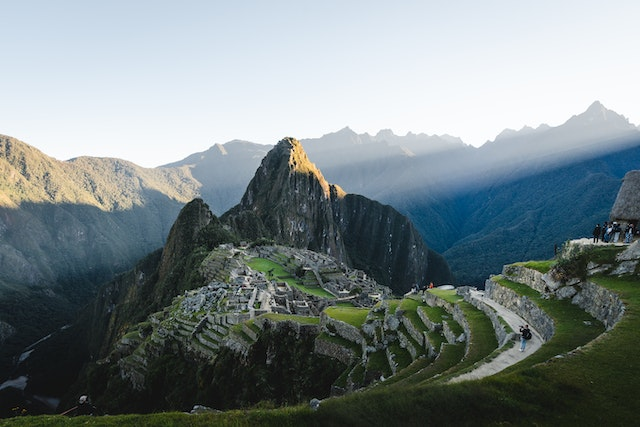

Descoberta em 1911, a Cidade Perdida dos Incas fica no topo de uma montanha com 2400 metros de altitude, no vale do rio Urubamba. Construída no século 15, conta com apenas 30% de sua construção original. O restante foi todo reconstruído, permitindo uma pequena ideia do que seria toda a sua grandiosidade, caso a obra permanecesse intacta até hoje.
